import os
import sys
sys.path.append('..')
import numpy as np
import pandas as pd
import matplotlib.pyplot as plt
from sklearn.model_selection import StratifiedKFold
from sklearn.metrics import balanced_accuracy_score, confusion_matrix, ConfusionMatrixDisplay
from scipy.stats import norm
from scipy.special import factorial
from source.spikes import rf
from source.utils import poisson_pdf, zscoreWeek 12
Naive Bayes Decoding
This week’s lecture will cover Naive Bayesian decoders. These rely on calculating the probability of an event occurring, y, given some data, x. In our case, that is the probability a certain stimulus was presented given the spiking activity of a population of neurons. Such decoders are easy to train and operate under a fundamentally different principle than the logistic classifiers we used in previous lectures. Moreover, they give us the opportunity to work with probability theory, which is something we only tangentially covered in previous lectures.
Conditional probability
We mentioned conditional probabilities when discussing how to interpret the logistic function. In that case, the logistic function reflects the probability of an event occurring given the features in our data, p(y|x), where y is the event and x are the features. Across all possible classes there will be a different probability given the features, p(y_k|x), and the sum of those probabilities across all possible classes will be 1:
\sum_{k=1}^{K}{p(y_k|x)} = 1
When evaluating the probability across all classes, the x is kept constant.
We can also express the conditional probability as a function of the probability that y and x occur together, p(y,x), and the probability of x occurring irrespective of y, p(x):
p(y|x) = \frac{p(y,x)}{p(x)} \tag{eq. 1}
Here p(y,x) is the joint probability that particular instances of y and x ever co-occur. If we divide that by the probability of x occurring, p(x), then we have the probability of y conditional on x. That is, it is the probability of y for all instances when x is of a particular value.
Bayes’ theorem
Given equation 1 and a little algebra, we can establish a fundamental relationship between conditional probabilities known as Bayes’ rule or theorem. Note that swapping x and y, we get the equation p(x|y)=\frac{p(x,y)}{p(y)}, which can be rearranged to p(x|y)p(y)=p(x,y). Also note that p(y,x) = p(x,y). With these facts, we can write:
\begin{align} p(y|x)p(x) &= p(y,x) = p(x,y) = p(x|y)p(y) \notag \\ p(y|x)p(x) &= p(x|y)p(y) \notag \\ p(y|x) &= \frac{p(x|y)p(y)}{p(x)} \tag{2} \\ \end{align}
This powerful relationship shows how to go from the conditional probability of x given y, to that of y given x.
Why is this relationship important? Returning to decoders, their goal is to estimate the probability of a behavioral or stimulus event, y_k, given patterns in brain activity, x. In the previous lectures we estimated this probability, p(y_k|x) using logistic regression. The event k with the largest probability was then chosen as the one most likely to have occurred. However, Bayes’ theorem offers an alternative approach. Instead we can derive the probability of y_k by measuring the probability of observing our brain data given that event y_k occurred (p(x|y_k)), and our knowledge about how often y_k occurs (p(y_k)).
Bayes’ theorem is so prominent that each term in it has a name: 1. p(y|x) is the posterior. This is the probability of an event given the brain data. 2. p(x|y) is the likelihood. This is the probability of the brain data given an event. 3. p(y) is the prior. This is the probability of an event occurring. 4. p(x) is the evidence. This is the probability of the observed brain data occurring.
Both the likelihood and prior can be determined from the data we have been working with so far. Less tractable is an estimate of the evidence, the probability of the brain data, because that would require us to observe all possible brain states. Fortunately, with classification we just want the event with the highest probability, and do not care about its actual probability. For a given decoding estimate, we want to estimate p(y_k|x) for a certain brain state we observed, x. This means that the p(x) in Bayes’ rule will be held constant across all possible events, y_k. Thus, while we do not know the exact value of p(x), it is the same value across all possible y_k. Consequently, it will not change which y_k is highest or lowest, so leaving it out has no impact on our ability to classify. As a result, our decoder can use the following rule:
\text{selection} = \arg\max_{y_k}p(x|y)p(y)
Let’s give this a try with a single neuron from the Allen Institute data set.
Bayes’ theorem and the single neuron
To start, we will load in the neurons from last week and select one with well defined tuning for orientation.
# initialize data cache
allen_dir = ['data','spike_allen']
# get the ids of the units that passed quality control last week
# save as an numpy file where the Allen cache is stored
ids_path = os.path.join(*allen_dir,'clean_unit_ids.npy')
unit_ids = np.load(ids_path)
# load the spike times for the units that passed quality control
spks_path = os.path.join(*allen_dir,'750332458_spikes.npy')
spks = np.load(spks_path,allow_pickle=True).item()
spks = pd.Series(spks).to_frame('times')
spks = spks[spks.index.isin(unit_ids)]
# get stimulus presentations
stims_path = os.path.join(*allen_dir,'750332458_stims.csv')
stims = pd.read_csv(stims_path)
dg_stims = stims[stims['stimulus_name'] == 'drifting_gratings']
dg_stims['orientation'] = pd.to_numeric(dg_stims['orientation'])
dg_stims['contrast'] = pd.to_numeric(dg_stims['contrast'])
dg_stims['spatial_frequency'] = pd.to_numeric(dg_stims['spatial_frequency'])
dg_stims['temporal_frequency'] = pd.to_numeric(dg_stims['temporal_frequency'])
dg_stims = dg_stims.dropna(axis='index', subset=['contrast',
'spatial_frequency', 'orientation',
'temporal_frequency'])
# compute orientation RF for each unit
spks['rf_ori'] = spks['times'].apply(
lambda x: rf(dg_stims, [0, 2]).compute(x, dims=['orientation']))
# get the empirical orientation tuning curve
spks['rf_ori_emp'] = spks['rf_ori'].apply(lambda x: x.rf())/var/folders/xr/cvz2q4cs7mn5n78kvjyvkb_00000gn/T/ipykernel_74644/3754280767.py:17: DtypeWarning:
Columns (5,14) have mixed types. Specify dtype option on import or set low_memory=False.
/var/folders/xr/cvz2q4cs7mn5n78kvjyvkb_00000gn/T/ipykernel_74644/3754280767.py:19: SettingWithCopyWarning:
A value is trying to be set on a copy of a slice from a DataFrame.
Try using .loc[row_indexer,col_indexer] = value instead
See the caveats in the documentation: https://pandas.pydata.org/pandas-docs/stable/user_guide/indexing.html#returning-a-view-versus-a-copy
/var/folders/xr/cvz2q4cs7mn5n78kvjyvkb_00000gn/T/ipykernel_74644/3754280767.py:20: SettingWithCopyWarning:
A value is trying to be set on a copy of a slice from a DataFrame.
Try using .loc[row_indexer,col_indexer] = value instead
See the caveats in the documentation: https://pandas.pydata.org/pandas-docs/stable/user_guide/indexing.html#returning-a-view-versus-a-copy
/var/folders/xr/cvz2q4cs7mn5n78kvjyvkb_00000gn/T/ipykernel_74644/3754280767.py:21: SettingWithCopyWarning:
A value is trying to be set on a copy of a slice from a DataFrame.
Try using .loc[row_indexer,col_indexer] = value instead
See the caveats in the documentation: https://pandas.pydata.org/pandas-docs/stable/user_guide/indexing.html#returning-a-view-versus-a-copy
/var/folders/xr/cvz2q4cs7mn5n78kvjyvkb_00000gn/T/ipykernel_74644/3754280767.py:22: SettingWithCopyWarning:
A value is trying to be set on a copy of a slice from a DataFrame.
Try using .loc[row_indexer,col_indexer] = value instead
See the caveats in the documentation: https://pandas.pydata.org/pandas-docs/stable/user_guide/indexing.html#returning-a-view-versus-a-copy
Then we will load a selected neuron and extract its spike counts across trials.
sel_unit = 951815599
rf_ori_counts = spks.loc[sel_unit,'rf_ori'].stim_counts
rf_ori_mean = spks.loc[sel_unit,'rf_ori_emp']
ori_vals = rf_ori_mean[2][0]We are interested in the distribution of those spike counts as a function of drifting grating orientation. We can use a violin plot to visualize that.
# plot the orientation tuning curve
fig, ax = plt.subplots(figsize=(6,5))
ax.plot(ori_vals, rf_ori_mean[0].flatten(), 'o-', color='blue')
# plot the distribution of spike counts for each orientation
for ori, counts in rf_ori_counts.iterrows():
vp = ax.violinplot(counts.values[0], positions=[ori], widths=30)
vp['bodies'][0].set_facecolor('blue')
vp['bodies'][0].set_alpha(0.2)
for line in ['cmaxes', 'cmins', 'cbars']:
vp[line].set_edgecolor('blue')
vp[line].set_linewidth(1)
ax.set_xticks(ori_vals)
ax.set_xlabel('Orientation (degrees)')
ax.set_ylabel('Spike count')
ax.set_title('Orientation tuning curve for unit {}'.format(sel_unit))Text(0.5, 1.0, 'Orientation tuning curve for unit 951815599')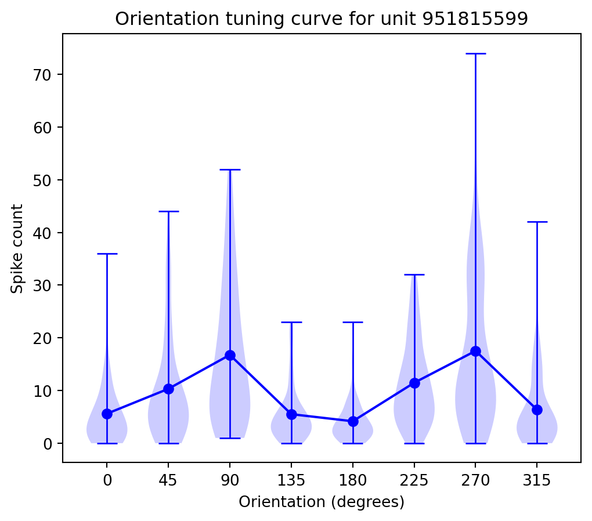
An alternative way to visualize this is the joint probability of observing some spike count, x, and orientation, y. This is expressed as p(x,y).
We can do this by counting the number of times each number of spike counts occurred for each orientation and placing that into an array. The rows will be the spike counts and the columns the orientations. This is just another example of binning. In previous lectures we binned spike times across time by counting the number of spikes in small intervals of time. That is, we grouped spikes together that fell in a time window and counted how many there were. Here, we are counting trials based on the orientation presented and number of spikes that occurred in response.
To convert this to a probability, we divide the count in each bin by the total number of trials.
# range of values to bin over
num_stim = rf_ori_counts.shape[0] # number of stimuli
max_counts = int(rf_ori_counts['spike_counts'].apply(lambda x: x.max()).max()) # max spike count
# joint distribution of spike counts
joint_dist = np.zeros((max_counts+1, num_stim))
for i, (_, counts) in enumerate(rf_ori_counts.iterrows()):
joint_dist[:,i] = np.histogram(counts.values[0], bins=np.arange(max_counts+2))[0]
# normalize by the total number of counts
joint_dist = joint_dist / joint_dist.sum()Now that the probability has been calculated and stored in joint_dist, let’s plot it.
# grid of joint distribution points
x, y = np.meshgrid(np.append(ori_vals, 360), np.arange(max_counts+2))
fig, ax = plt.subplots(figsize=(4,5))
ax.pcolormesh(x, y, joint_dist)
fig.colorbar(ax=ax, mappable=ax.collections[0])
ax.set_xlabel('Orientation')
ax.set_ylabel('Spike count')
ax.set_title('Joint probability distribution of spike counts and orientation')Text(0.5, 1.0, 'Joint probability distribution of spike counts and orientation')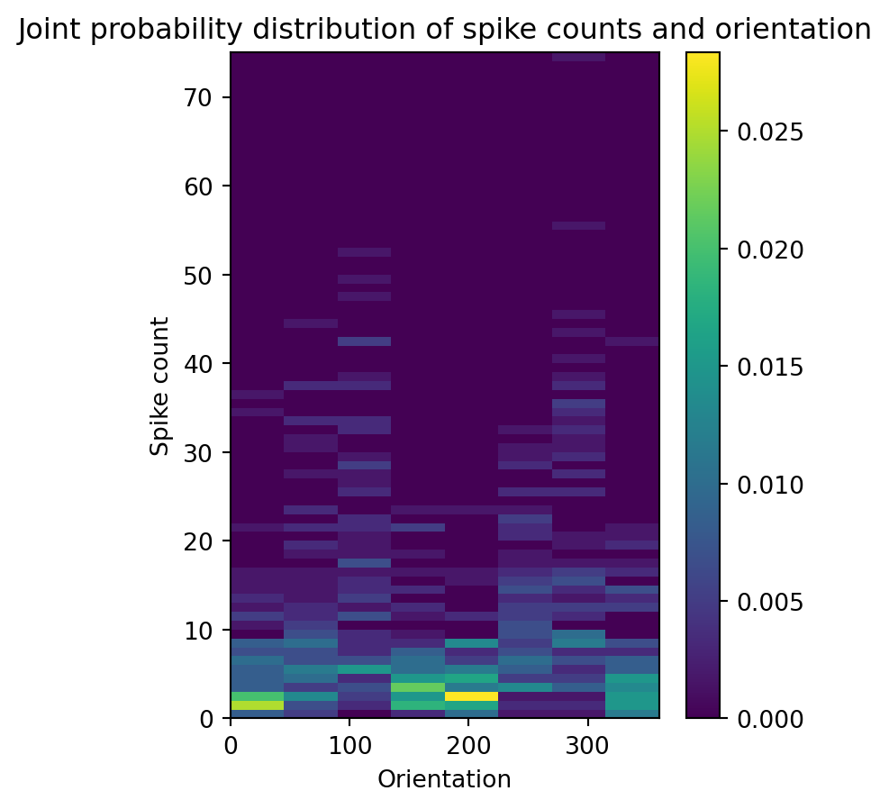
Notice that the probabilities are not smooth but spotty and sometimes have gaps between them. This becomes easily seen if we color white those bins with 0 counts.
# remove zeros for better visualization
joint_dist_nan = joint_dist.copy()
joint_dist_nan[joint_dist_nan==0] = np.nan
fig, ax = plt.subplots(figsize=(4,5))
ax.pcolormesh(x,y,joint_dist_nan)
fig.colorbar(ax=ax, mappable=ax.collections[0])
ax.set_xlabel('Orientation')
ax.set_ylabel('Spike count')
ax.set_title('Joint probability distribution of spike counts and orientation')Text(0.5, 1.0, 'Joint probability distribution of spike counts and orientation')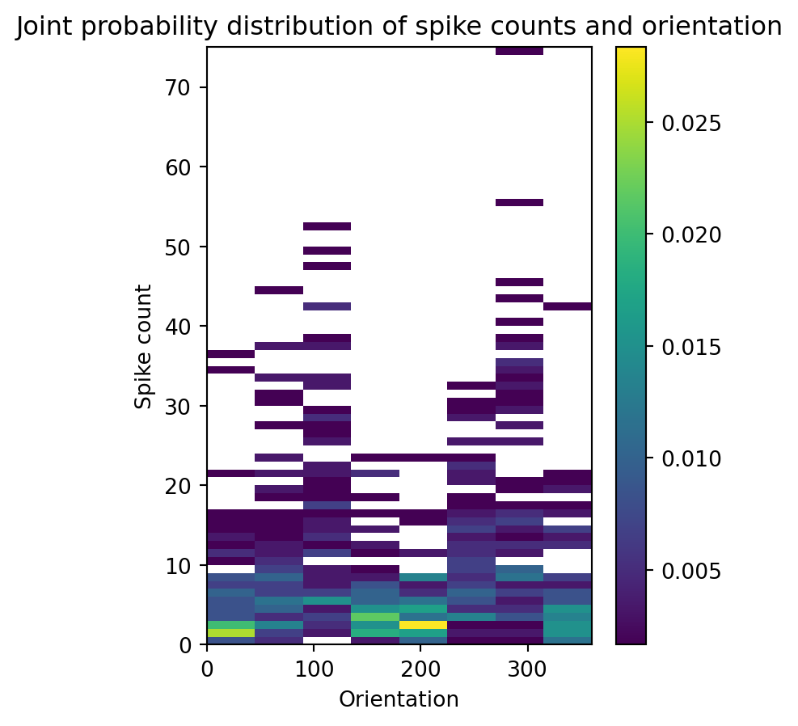
Here we have some combinations of orientation and spike count that never occurred, and so they are given a probability of 0. For instance, there were no trials with an orientation of 45 degrees that had 17 spikes. But, there were trials when 45 degree oriented gratings were presented that had 16 or 18 spikes.
print('Orientation of 45 degrees and spike count of 16: {:.3f} probability'.format(joint_dist[16,1]))
print('Orientation of 45 degrees and spike count of 17: {:.3f} probability'.format(joint_dist[17,1]))
print('Orientation of 45 degrees and spike count of 18: {:.3f} probability'.format(joint_dist[18,1]))Orientation of 45 degrees and spike count of 16: 0.002 probability
Orientation of 45 degrees and spike count of 17: 0.000 probability
Orientation of 45 degrees and spike count of 18: 0.002 probabilitySo now you might be wondering: Why is this a problem? Afterall, if something never occurred then it should have a probability of 0. Well, imagine we had only given a single presentation of each orientation, and constructed our joint probability distribution from that. In that case, we would only have one bin filled in for each orientation column, with the rest being 0. This extreme sparseness is because we did not sample the neuron’s responses sufficiently. To overcome this, we would increase the number of trials. In theory, if we gave an infinite number of trials, we would expect a smooth joint probability distribution with no missing spots.
Since it is impossible to give an infinite number of trials, we will instead fit a curve to the neuron’s response to each stimulus. That curve will give an estimate of the neuron’s response that is continuous, i.e. without gaps. The challenge now is to choose the curve we want to use. In the last lecture we discussed how neuronal spike counts follow a Poisson distribution, and fit a curve to those. We can do the same thing here, fitting the Poisson distribution to each orientation.
To calculate the Poisson probability distribution, p(x) = \frac{\lambda^xe^{-\lambda}}{x!}, we only need to specify one parameter, \lambda, which is the mean value of the distribution. For our case, that will be the mean spike count for each orientation. For the Poisson distribution function we will call the poisson_pdf function we created last week.
# fit a Poisson distribution based on the mean spike counts for each orientation
p_xgy_pois = np.zeros((max_counts+1, num_stim))
for i in range(num_stim):
p_xgy_pois[:,i] = poisson_pdf(np.arange(max_counts+1), rf_ori_mean[0][i])
# plot the joint distribution and the Poisson fit
fig, ax = plt.subplots(1,2,figsize=(8,5))
ax[0].pcolormesh(x, y, joint_dist)
fig.colorbar(ax=ax[0], mappable=ax[0].collections[0])
ax[0].set_xlabel('Orientation')
ax[0].set_ylabel('Spike count')
ax[0].set_title('Observed')
ax[1].pcolormesh(x, y, p_xgy_pois)
fig.colorbar(ax=ax[1], mappable=ax[1].collections[0])
ax[1].set_xlabel('Orientation')
ax[1].set_ylabel('Spike count')
ax[1].set_title('Poisson fitted')
fig.tight_layout()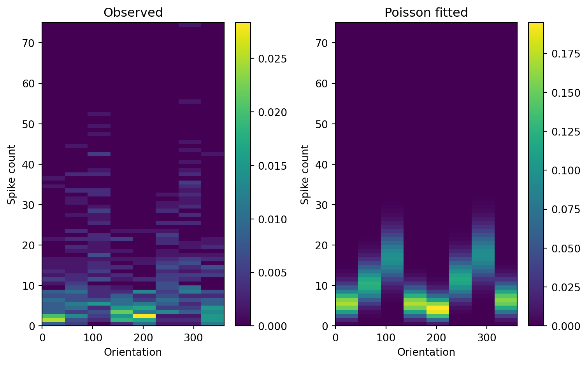
The match is not perfect. The values in our Poisson distribution probabilities are generally higher than those of the observed joint distribution. This is because when we calculate the Poisson probability for each orientation separately, we are really calculating p(x|y_k), which is a conditional probability. With a conditional probability the sum of p(x|y_k) across all values of x for event y_k must equal 1. On the other hand, the joint distribution, p(x,y), must sum to 1 across all orientations.
You may also have noticed that the Poisson distribution generally tends to be more concentrated around the mean spike count, with the observed joint distribution showing greater spread. This can be seen clearly if we plot the distribution for a single orientation. To do this, we will convert the fitted distribution which is conditional on y to the joint probability, using p(x,y)=p(x|y)p(y). It is easy to calculate p(y) by just counting the number of trials for each orientation, and dividing by the total number of trials. We can use the observed joint probability distribution for that.
# calculate probability of each orientation being presented
p_y = joint_dist.sum(axis=0) / joint_dist.sum()
# calculate the joint distribution of spike counts and orientation
# based on the Poisson fit
p_xy_pois = p_xgy_pois * p_y
fig, ax = plt.subplots(figsize=(7,3))
ax.bar(np.arange(max_counts+1), joint_dist[:,2], 1, label='Observed')
ax.plot(np.arange(max_counts+1), p_xy_pois[:,2], color='tab:orange', label='Poisson fitted')
ax.set_xlabel('Spike count')
ax.set_ylabel('Probability')
ax.set_title('Observed and Poisson fitted joint distribution for orientation of 90 degrees')
ax.legend()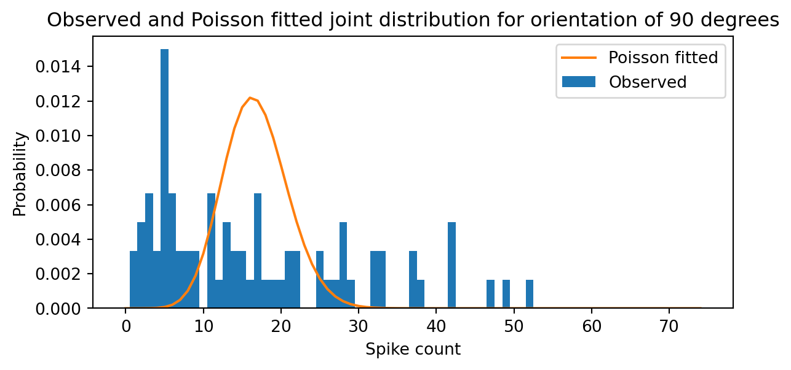
Plotting the observed and fitted distributions this way lays bear the problem with assuming a Poisson distribution. There are two likely explanations. The first is that the neuron’s spiking does not behave like a Poisson process. When we specify the wrong model for the process generating some data, this is referred to as model misspecification. As discussed in the last lecture, neuronal spiking is only approximately Poisson. Another reason is that we have pooled together all gratings that had the same orientation, but they vary in their temporal frequency. If the neuron was sensitive to temporal frequency, it would have a different \lambda for each one. Some temporal frequencies might elicit little or no spiking (producing a low \lambda), and others could activate robustly (high \lambda). This would give us a broad distribution of spike counts.
Nevertheless, the Poisson distribution approximation might be good enough for the purpose of decoding which orientation was presented based on the spike count. Since we are using Bayes’ rule, we know that p(y|x) \propto p(x|y)p(y). Thus, we can use the joint probability of the fitted distribution we just calculated, p_xy_pois, to determine the most likely stimulus for a given spike count.
Let’s range over the various spike counts that were recorded and return the orientation that was most likely for each based on p(x|y)p(y).
# initialize the spike counts and predicted orientations
spk_counts = np.arange(max_counts+1)
pred_ori = np.zeros(spk_counts.shape)
# predict the orientation based on the spike count using p(x|y) * p(y)
# here x is the observed spike count, which we use to index the row of p_xgy_pois
nb_pred = lambda x: ori_vals[np.argmax(p_xgy_pois[x,:] * p_y)]
for count in spk_counts:
# selects the orientation with the highest probability for the given spike count
pred_ori[count] = nb_pred(count)
# plot the predicted orientation based on the spike count
fig, ax = plt.subplots(figsize=(7,3))
ax.plot(spk_counts, pred_ori)
ax.set_yticks(ori_vals)
# arrows denoting points of interest
ax.annotate('Worst', xy=(0, pred_ori[0]), xytext=(-2, pred_ori[0]+30))
ax.arrow(0, pred_ori[0]+25,0, -25, length_includes_head=True, head_width=0.5, head_length=10, fc='k', ec='k')
ax.annotate('Second', xy=(15, pred_ori[15]), xytext=(13, pred_ori[15]-40))
ax.arrow(15, pred_ori[15]-25,0, 25, length_includes_head=True, head_width=0.5, head_length=10, fc='k', ec='k')
ax.annotate('Best', xy=(25, pred_ori[25]), xytext=(23, pred_ori[25]+30))
ax.arrow(25, pred_ori[25]+25,0, -25, length_includes_head=True, head_width=0.5, head_length=10, fc='k', ec='k')
# add a transpancency beteen 5 and 12 spike counts and label it as 'moderate'
ax.fill_between(np.arange(4,14), 0, 360, color='gray', alpha=0.2)
ax.text(9, 320, 'Zone of\nMid', ha='center')
ax.set_xlabel('Spike count')
ax.set_ylabel('Predicted orientation')
ax.set_title('Predicted orientation based on spike count')Text(0.5, 1.0, 'Predicted orientation based on spike count')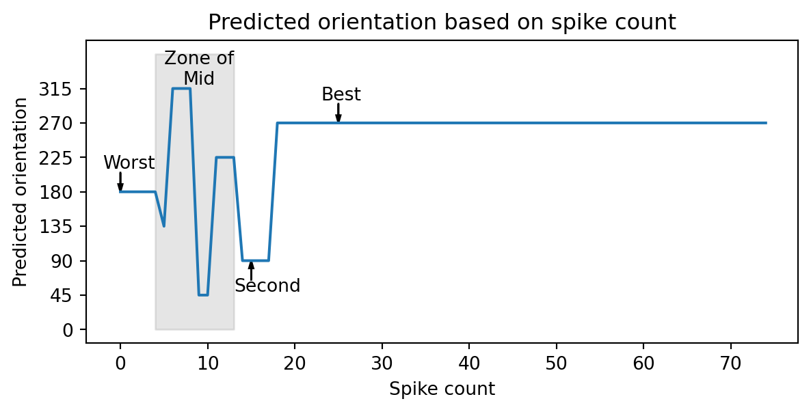
Well that was way easier than logistic regression! Once you have calculated the approximation of p(y|x) from the the fitted Poisson distribution (Poisson fit of p(x|y), p_xgy_pois) and the probability of an orientation (p(y), p_y), you just plug in the observed spike count (x) and select the orientation that had the highest probability using np.argmax.
We can see here that for very low spike counts the stimulus eliciting the fewest spikes, 180 degrees, was selected (‘Worst’). As we increase the number of observed spikes, the selected orientations bounces between the various stimuli that it shows a moderate response (‘Zone of Mid’). Further increasing the spike count has the decoder returning the second most preferred stimulus (‘Second’), which was 90 degrees. Finally, above a count of ~20 spikes the decoder always returns the preferred stimulus of 270 degrees (‘Best’).
So how does this decoder perform? For the moment, let’s ignore issues with dividing our data into training and test sets and just evaluate the overall performance. This stacks the deck in the decoder’s favor due to the potential for overfitting, so the performance we see here will probably be the highest it can be.
# create an array of actual orientations and their corresponding spike counts
# first we take our counts dataframe and give each trial its own row
eval_nb = rf_ori_counts.explode('spike_counts').reset_index()
# then we predict the orientation based on the spike count
eval_nb['pred_ori'] = eval_nb['spike_counts'].apply(lambda x: nb_pred(int(x)))
# convert orientations to integers for display purposes
eval_nb['orientation'] = eval_nb['orientation'].astype(int)
eval_nb['pred_ori'] = eval_nb['pred_ori'].astype(int)
# calculate the accuracy of the model
score = balanced_accuracy_score(eval_nb['orientation'], eval_nb['pred_ori'])
print('Balanced accuracy score: {:.1f}%'.format(score*100))Balanced accuracy score: 19.5%Wow, only 19.5%! Given that there are 8 orientations, that gives us a chance performance of 100\%/8=12.5\%. So we are better than chance, but still abysmal. Ok, but why are we poor? Let’s use a confusion matrix to figure this out.
# create a confusion matrix
conf_mat = confusion_matrix(eval_nb['orientation'], eval_nb['pred_ori'])
# plot the confusion matrix
fig, ax = plt.subplots(1,2, figsize=(10,4))
cmd = ConfusionMatrixDisplay(confusion_matrix=conf_mat, display_labels=ori_vals)
cmd.plot(ax=ax[0],cmap='Blues')
ax[0].set_title('Confusion matrix')
ax[0].set_xticklabels(map(int,ori_vals))
ax[0].set_yticklabels(map(int,ori_vals))
# draw red box around select incorrect classifications and green box around select correct classifications
ax[0].add_patch(plt.Rectangle((np.where(ori_vals==270)[0][0]-0.5, np.where(ori_vals==90)[0][0]-0.5), 1, 1, fill=False, edgecolor='red', lw=2))
ax[0].add_patch(plt.Rectangle((np.where(ori_vals==270)[0][0]-0.5, np.where(ori_vals==270)[0][0]-0.5), 1, 1, fill=False, edgecolor='green', lw=2))
ax[0].add_patch(plt.Rectangle((np.where(ori_vals==180)[0][0]-0.5, np.where(ori_vals==0)[0][0]-0.5), 1, 1, fill=False, edgecolor='red', lw=2))
ax[0].add_patch(plt.Rectangle((np.where(ori_vals==180)[0][0]-0.5, np.where(ori_vals==180)[0][0]-0.5), 1, 1, fill=False, edgecolor='green', lw=2))
ax[1].plot(ori_vals, rf_ori_mean[0])
ax[1].set_xticks(ori_vals)
ax[1].set_xlabel('Orientation')
ax[1].set_ylabel('Spike count')
ax[1].set_title('Orientation tuning curve')
fig.tight_layout()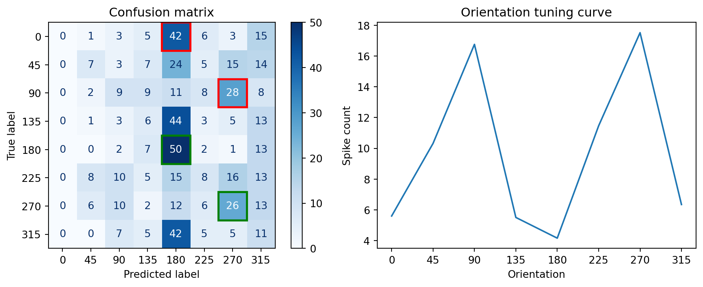
Perhaps not surprisingly given the low performance, we do not see a nice diagonal of elevated instances of correct matches between True and Predicted labels. Instead, we see a column of elevated predictions at 180 degrees. Examining the tuning curve for orientation, we see that the 180 degree orientation evoked the least spiking on average, so whenever a stimulus evoked none or just a few spikes it was classified as that. Due to the broad distribution of spike counts at each orientation, with an elevated number at 0, this could go a long way to explaining the poor performance. For many presentations of the drifting grating just a few spike were elicited. This could be because the neuron has strong temporal frequency tuning, so if a drifting grating with a non-preferred temporal frequency is presented it will not respond. We will address this later by trying to predict both orientation and temporal frequency, but in the meantime let’s see how far we can get just with orientation.
Another notable feature of the confusion matrix is that it shows a repeating pattern along the True label axis. To highlight this, I have placed green and red boxes around selected entries in the confusion matrix. Those in green surround correct classifications (they lie along the diagonal), while those in red are for incorrect (they are off-diagonal). You can see that when the True and Predicted labels were both 180 degrees there was an elevated number of correct predictions. Moving to the case where the true label was 0 and the predicted was 180, we again see an elevated number of predictions. These True labels are 180 degrees apart, and indeed if you examine other entries in the 180 degrees prediction column you will find that the counts are similar for those 180 degrees apart (e.g. 315 vs 180). This is also the case when the predicted label was 270 degrees. Here there are 26 instances of correct predictions where the true label was 270 degrees and the predicted label was also 270. Moving 180 degrees, there is another bump in predictions (this time incorrect), at 90 degrees. Thus, the classifier is having trouble discriminating between orientations that are 180 degrees apart.
The reason for this is apparent when we inspect the orientation tuning curve. Note how it has a triangular shape from 0 to 180 degrees, and that shape repeats again from 180 to 315. This is because the neuron is tuned to the orientation of the drifting grating, but does not care about the direction of motion. If the neuron fires a lot of spikes, it is equally likely that it was exposed to a drifting grating at either 90 or 270 degrees. Likewise, if it doesn’t fire much, it is likely responding to a drifting grating oriented at 0 or 180 degrees.
Due to these symmetries in orientation tuning, it is not possible to decode orientation using this single neuron. To overcome this, we can try pooling together multiple neurons, each with their own tuning curve. If these neurons also have a slight asymmetry in their responding to orientations 180 degrees apart, this may be sufficient to decode the entire range of orientations (0-360 degrees).
Putting the naive into a Naive Bayesian decoder
So far we have tried to infer orientation from a single neuron using Bayes’ rule. To do this, we calculated the probability of a spike count (x) given an orientation (y) multiplied by the probability that the orientation was presented. Mathematically we expressed this as p(x|y)p(y). The orientation that yielded the highest probability is the one we predict was presented. However, symmetries in orientation tuning impeded our ability to decode with a single neuron. We could distinguish between orientations that were 180 degrees apart.
To overcome this, we will try to use the spiking from multiple neurons, presumably each with a different preferred orientation and some degree of asymmetry in their orientation tuning.
asym_unit = 951815256
rf_ori_asym_mean = spks.loc[asym_unit,'rf_ori_emp']
fig, ax = plt.subplots(1,2,figsize=(8,3))
ax[0].plot(ori_vals, rf_ori_mean[0].flatten())
ax[0].set_xticks(ori_vals)
ax[0].set_xlabel('Orientation (degrees)')
ax[0].set_ylabel('Spike count')
ax[0].set_title('Symmetric')
ax[1].plot(ori_vals, rf_ori_asym_mean[0].flatten())
ax[1].set_xticks(ori_vals)
ax[1].set_xlabel('Orientation (degrees)')
ax[1].set_title('Asymmetric')Text(0.5, 1.0, 'Asymmetric')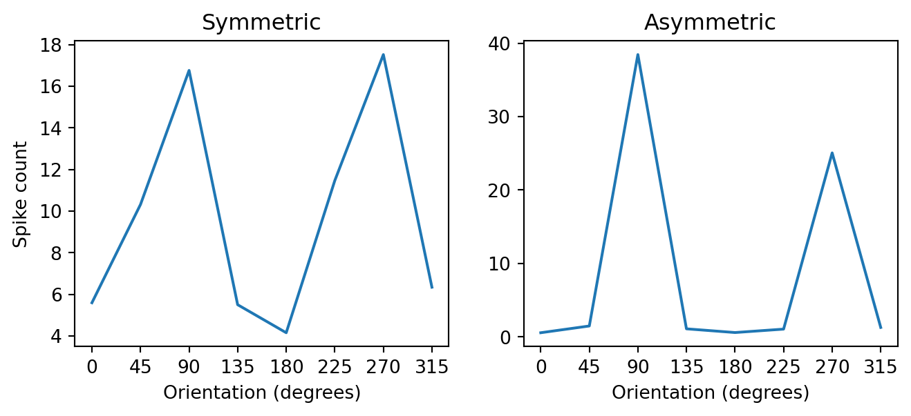
Here are the orientation tuning curves for two different neurons. The first is the one we have been studying that has a mostly symmetric tuning. The one on the right has the same orientation tuning (peaking at 90 and 270 degrees), with with greater asymmetry in its response to its preferred orientations. Its response to 90 degree drifting gratings is stronger than at 270 degrees.
How can we use Bayes’ rule to predict orientation using the responses of two different neurons? For this we want to solve for p(y|x_1,x_2), where x_1 is the spike count from the first neuron and x_2 is the spike count from the second neuron. To calculate p(y|x_1,x_2), we will make the naive assumption that the two neurons fire independently of each other. This simplifies calculating the joint probability because we do not have to estimate it for every possible combination of spike counts arising from the symmetric and asymmetric units. Instead, we just calculate their probabilities separately and then multiply to find their joint probability. Expressed mathematically, we would write:
\begin{align} p(y|x_1,x_2) &\propto p(x_1,x_2|y)p(y) \notag \\ &\propto p(x_1|y)p(x_2|y)p(y) \notag \\ \end{align}
We can do this because the joint probability of two independent events is equal to their individual probabilities multiplied together, i.e. p(x_1,x_2)=p(x_1)p(x_2). Making those probabilities conditional on y (e.g. p(x_1|y)) does not change this so long as their independence is maintained for all possible values of y.
Thus, to decode the orientation we just need to multiply the Poisson count probabilities for the two units and plug in their corresponding observed spike counts.
rf_ori_asym_counts = spks.loc[asym_unit,'rf_ori'].stim_counts
max_counts_asym = int(rf_ori_asym_counts['spike_counts'].apply(lambda x: x.max()).max())
# get the joint probability distribution of spike counts and orientation
p_xy_asym = np.zeros((max_counts_asym+1, num_stim))
for i, (_, counts) in enumerate(rf_ori_asym_counts.iterrows()):
p_xy_asym[:,i] = np.histogram(counts.values[0], bins=np.arange(max_counts_asym+2))[0]
p_xy_asym = p_xy_asym / p_xy_asym.sum()
# fit a Poisson distribution based on the mean spike counts for each orientation
p_xgy_pois_asym = np.zeros((max_counts_asym+1, num_stim))
for i in range(num_stim):
p_xgy_pois_asym[:,i] = poisson_pdf(np.arange(max_counts_asym+1), rf_ori_asym_mean[0][i])
# compare the observed joint distribution and poisson fitted conditional distribution
x_asym, y_asym = np.meshgrid(np.append(ori_vals, 360), np.arange(max_counts_asym+2))
fig, ax = plt.subplots(1,2,figsize=(6,4))
ax[0].pcolormesh(x_asym, y_asym, p_xy_asym/p_y) # divide by p(y) to get p(x|y)
fig.colorbar(ax=ax[0], mappable=ax[0].collections[0])
ax[0].set_xlabel('Orientation')
ax[0].set_ylabel('Spike count')
ax[0].set_title('Observed')
ax[1].pcolormesh(x_asym, y_asym, p_xgy_pois_asym)
fig.colorbar(ax=ax[1], mappable=ax[1].collections[0])
ax[1].set_xlabel('Orientation')
ax[1].set_title('Poisson fitted')
fig.suptitle('Joint probability for asymmetric unit')
fig.tight_layout()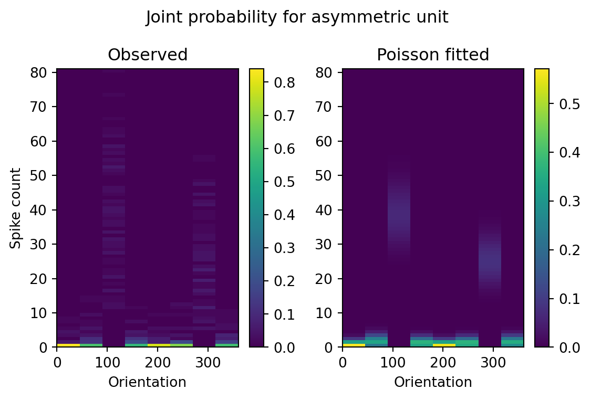
This asymmetric unit shows many of the same differences between its observed spike counts and the Poisson fits, such as sparseness of the observed counts and less dispersion of the counts at the preferred orientations.
Now that we have Poisson approximations for p(x|y) for both units, let’s try doing some decoding with them.
# predict the orientation based on the spike count using p(x_1|y) * p(x_2|y) * p(y)
# here x1 and x2 are the observed spike counts, which we use to index into the rows of p_xgy_pois and p_xgy_pois_asym
nb_pred_2 = lambda x1, x2: ori_vals[np.argmax(p_xgy_pois[int(x1),:] * p_xgy_pois_asym[int(x2),:] * p_y)]
# create dataframe with both spike counts broken out
eval_nb_2 = rf_ori_counts.explode('spike_counts').reset_index()
eval_nb_2_asym = rf_ori_asym_counts.explode('spike_counts').reset_index()
eval_nb_2_asym = eval_nb_2_asym.rename(columns={'spike_counts':'spike_counts_asym'})
eval_nb_2 = pd.concat([eval_nb_2, eval_nb_2_asym['spike_counts_asym']], axis=1)
# predict the orientation based on the spike counts
eval_nb_2['pred_ori'] = eval_nb_2.apply(lambda x: nb_pred_2(x['spike_counts'], x['spike_counts_asym']), axis=1)
# calculate the accuracy of the model
score = balanced_accuracy_score(eval_nb_2['orientation'], eval_nb_2['pred_ori'])
print('Balanced accuracy score: {:.1f}%'.format(score*100))Balanced accuracy score: 35.7%Nice! We almost doubled our accuracy. Mind you, it is still bad, but now we are about 3 times above chance. Let’s examine the confusion matrix to see what is driving the improved performance.
# create a confusion matrix
cmd_2 = confusion_matrix(eval_nb_2['orientation'], eval_nb_2['pred_ori'])
# plot the confusion matrix
fig, ax = plt.subplots(1,2, figsize=(10,4))
cmd_2_display = ConfusionMatrixDisplay(confusion_matrix=cmd_2, display_labels=ori_vals)
cmd_2_display.plot(ax=ax[0], cmap='Blues')
ax[0].set_title('Confusion matrix')
ax[0].set_xticklabels(map(int,ori_vals))
ax[0].set_yticklabels(map(int,ori_vals))
ax[0].plot([np.where(ori_vals==180)[0], np.where(ori_vals==315)[0]],
[np.where(ori_vals==0)[0], np.where(ori_vals==135)[0]], color='red', lw=4)
ax[0].plot([np.where(ori_vals==180)[0], np.where(ori_vals==315)[0]],
[np.where(ori_vals==180)[0], np.where(ori_vals==315)[0]], color='green', lw=4)
ax[1].plot(ori_vals, rf_ori_mean[0]/rf_ori_mean[0].max(), label='Symmetric')
ax[1].plot(ori_vals, rf_ori_asym_mean[0]/rf_ori_asym_mean[0].max(), label='Asymmetric')
ax[1].set_xticks(ori_vals)
ax[1].set_xlabel('Orientation')
ax[1].set_ylabel('Normalized spike count')
ax[1].set_title('Orientation tuning curves')
ax[1].legend()
fig.tight_layout()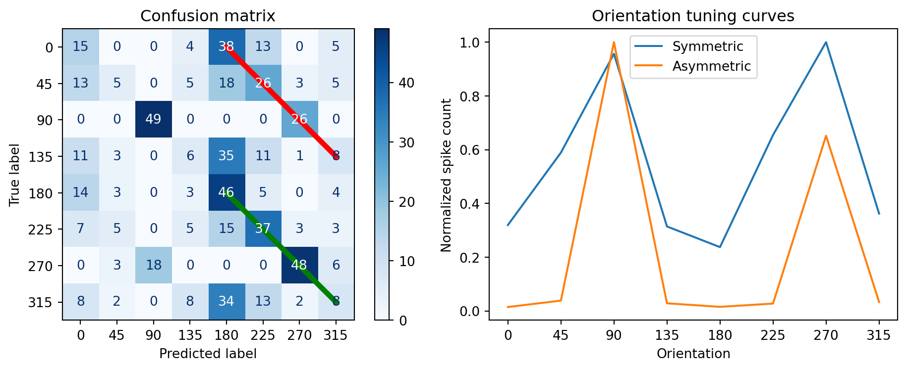
Elevated levels of correct predictions are now starting to populate the diagonal of the confusion matrix. Notice that the preferred orientations at 90 and 270 degrees show few misclassifications, and when they do it is confusing between them. We still see some reflection of the classifications spaced at 180 degrees, resulting in missclassifications in the upper half of the confusion matrix (red diagonal line is miss, green is correct). Overcoming this requires incorporating neurons tuned to other orientations.
Creating a Naive Bayes decoder class
At this point it will only get more cumbersome to scale up our piecemeal approach to decoding. Instead, we will create a class to encapsulate the process and make some improvements. We want it to behave similar to estimator classes in SciKit learn, which means at least defining __init__(), fit, predict, and score methods. In addition, instead of calculating a table of conditional probabilities (p(x|y)), for each unit we will just define \lambda for each orientation, which can be passed with the spike counts to the Poisson distribution equation to solve for the probability. This allows us to accommodate spike counts exceeding the maximum we had observed. Since it will be working with Poisson count data, in the spirit of naming conventions for Naive Bayes classifiers in SciKit learn that use the distribution name, we will call our class PoissonNB.
class PoissonNB():
def __init__(self):
self.vals_y = None
self.p_y = None
self.params = None # parameter for each class and neuron [n_classes, n_neurons, ...]
def _pdf(self, x):
"""
Calculate the Poisson probability density function.
Parameters
----------
X : array-like, shape (n_features)
A single input sample. For this model, it is the spike counts.
Each entry corresponds to a neuron.
Returns
-------
pdf : array-like, shape (n_classes, n_features)
The Poisson probability densities for each sample and neuron.
"""
if self.params is None:
raise ValueError('Model has not been trained yet.')
return (np.power(self.params, x) * np.exp(-self.params)) / factorial(x)
def predict(self, X):
"""
Predict the class of the input samples.
Parameters
----------
X : array-like, shape (n_samples, n_features)
The input samples. For this model, it is the spike counts.
Each row to a sample and each column corresponds to a neuron.
Returns
-------
y_pred : array-like, shape (n_samples)
The predicted classes.
"""
num_samples = X.shape[0]
# calculate the likelihood of each class
p_xgy = np.zeros((X.shape[0], len(self.vals_y)))
for i in range(num_samples):
p_xgy[i] = np.prod(self._pdf(X[i]), axis=1)
# calculate the posterior probability of each class
p_ygx = p_xgy * self.p_y
# predict the class with the highest posterior probability
y_pred = self.vals_y[np.argmax(p_ygx, axis=1)]
return y_pred
def score(self, X, y):
"""
Calculate the balanced accuracy score of the model on the input samples.
Parameters
----------
X : array-like, shape (n_samples, n_features)
The input samples. For this model, it is the spike counts.
Each row to a sample and each column corresponds to a neuron.
y : array-like, shape (n_samples,)
The target values.
Returns
-------
score : float
The balanced accuracy score of the model on the input samples.
"""
y_pred = self.predict(X)
score = balanced_accuracy_score(y, y_pred)
return score
def fit(self, X, y):
"""
Fit the model to the data.
Parameters
----------
X : array-like, shape (n_samples, n_features)
The training input samples. For this model, it is the spike counts.
Each row to a sample and each column corresponds to a neuron.
y : array-like, shape (n_samples,)
The target values.
Returns
-------
score : float
The balanced accuracy score of the model on the training data.
"""
# get the unique classes of y
self.vals_y = np.unique(y)
# calculate the prior probability of each class
self.p_y = np.array([np.sum(y==c) / len(y) for c in self.vals_y])
# calculate the parameters for each class
self.params = np.zeros((len(self.vals_y), X.shape[1]))
for i, c in enumerate(self.vals_y):
self.params[i] = np.mean(X[y==c], axis=0)
# calculate the balanced accuracy score
score = self.score(X, y)
return scoreYou should notice that our Naive Bayes estimator class is a lot simpler than the logistic regression ones we implemented before. The only attributes we need to store are the values of the y classes, their prior probability distribution (p_y), and the params to hold the \lambda values for each neuron/feature at each class. Solving for lambda is easy; for each neuron we just take its mean count for each class. Prediction is easy as well. A vector of spike counts (shape = [n_features]) is passed to the _pdf method implementing the Poisson probability density function. In that we use Numpy broadcasting to calculate the probability for each class and neuron using the \lambda\text{s} stored in self.params (shape = [n_classes, n_features]). The code for this, and it’s mathematical translation, is:
(np.power(self.params, X) * np.exp(-self.params)) / factorial(X) |
\frac{\lambda^x e^{-\lambda}}{x!} |
|---|---|
| Code | Equation |
This array of probabilities, which contains the values of p(x \mid y) for each combination of neuron and class, are multiplied together for each class to give the probability of the spike counts given a particular class, p(x \mid y_k).
p_xgy[i] = np.prod(self._pdf(X[i]), axis=1) |
p(x \mid y_k)=\prod_{i=1}^{n}{p(x_i \mid y_k)} |
|---|---|
| Code | Equation |
With p(x \mid y), we can now incorporate the prior and solve for an approximation of the likelihood.
p_ygx = p_xgy * self.p_y |
p(y \mid x) \propto p(x \mid y) p(y) |
|---|---|
| Code | Equation |
And lastly, we identify the class of y with the highest probability and select it.
y_pred = self.vals_y[np.argmax(p_ygx, axis=1)] |
\text{selection} = \arg\max_{y_k}p(y \mid x) |
|---|---|
| Code | Equation |
With our new class, we can easily train a variety of decoders. Let’s start with the same two cells we tried predicting with before. Since the model parameters are fitted by just taking the mean, there is none of the randomness found in stochastic gradient descent and so we should get the exact same performance.
X = eval_nb_2[['spike_counts', 'spike_counts_asym']].values.astype(int)
y = eval_nb_2['orientation'].values
model = PoissonNB()
score = model.fit(X, y)
print('Balanced accuracy score: {:.1f}%'.format(score*100))Balanced accuracy score: 35.7%Fantastic, the same performance! No reason to limit ourselves to just two neurons, let’s feed in all the neurons that were recorded from and see how the decoder performs.
To do this, we will breakout each of their spike_counts data frames into a ‘tall’ data frame using explode. Then after some renaming and removing of columns we will concatenate them together. Essentially we are doing the same thing we did above to combine the spike counts across orientations for two neurons, but doing it with a for loop so we can handle all neurons in the spikes dataframe.
def spike_counts_dataframe(spikes, column):
"""
Create a dataframe with the spike counts across all units.
Parameters
----------
spikes : pd.DataFrame
The dataframe containing the spike counts.
column : str
The column to use for the spike counts.
Returns
-------
counts : pd.DataFrame
A dataframe with the spike counts for each unit.
"""
# get the index names
ind_names = spikes[column].iloc[0].index.names
counts = pd.DataFrame()
for i, row in spikes.iterrows():
# create a dataframe with the spike counts for each orientation
curr_counts = row[column].explode('spike_counts').reset_index()
# rename the spike counts column to include the unit id
curr_counts.rename(columns={'spike_counts':'counts_{}'.format(i)}, inplace=True)
# if not first run through loop, drop orientation column
if i != spikes.index.values[0]:
curr_counts.drop(columns=ind_names, inplace=True)
# merge the current counts with the previous counts
counts = pd.concat([counts, curr_counts], axis=1)
return counts
# create a dataframe with the spike counts for each unit
spks['rf_ori_counts'] = spks['rf_ori'].apply(lambda x: x.stim_counts)
counts_ori = spike_counts_dataframe(spks, 'rf_ori_counts')
# display the dataframe
counts_ori| orientation | counts_951816812 | counts_951815078 | counts_951815150 | counts_951815118 | counts_951815110 | counts_951815103 | counts_951815168 | counts_951815221 | counts_951815212 | ... | counts_951816876 | counts_951816866 | counts_951816291 | counts_951816285 | counts_951816276 | counts_951816306 | counts_951817007 | counts_951816341 | counts_951816483 | counts_951816492 | |
|---|---|---|---|---|---|---|---|---|---|---|---|---|---|---|---|---|---|---|---|---|---|
| 0 | 0.0 | 0.0 | 11.0 | 10.0 | 5.0 | 0.0 | 10.0 | 0.0 | 3.0 | 66.0 | ... | 0.0 | 0.0 | 43.0 | 0.0 | 4.0 | 5.0 | 0.0 | 4.0 | 16.0 | 2.0 |
| 1 | 0.0 | 1.0 | 18.0 | 21.0 | 0.0 | 0.0 | 2.0 | 0.0 | 3.0 | 69.0 | ... | 0.0 | 10.0 | 81.0 | 0.0 | 11.0 | 12.0 | 2.0 | 2.0 | 28.0 | 1.0 |
| 2 | 0.0 | 4.0 | 29.0 | 1.0 | 0.0 | 0.0 | 0.0 | 0.0 | 1.0 | 29.0 | ... | 0.0 | 0.0 | 7.0 | 0.0 | 0.0 | 0.0 | 0.0 | 0.0 | 1.0 | 0.0 |
| 3 | 0.0 | 3.0 | 23.0 | 2.0 | 0.0 | 1.0 | 0.0 | 0.0 | 5.0 | 43.0 | ... | 0.0 | 0.0 | 3.0 | 0.0 | 0.0 | 0.0 | 0.0 | 0.0 | 1.0 | 1.0 |
| 4 | 0.0 | 1.0 | 19.0 | 5.0 | 1.0 | 1.0 | 0.0 | 0.0 | 5.0 | 49.0 | ... | 0.0 | 0.0 | 20.0 | 0.0 | 1.0 | 4.0 | 0.0 | 0.0 | 10.0 | 0.0 |
| ... | ... | ... | ... | ... | ... | ... | ... | ... | ... | ... | ... | ... | ... | ... | ... | ... | ... | ... | ... | ... | ... |
| 595 | 315.0 | 0.0 | 39.0 | 0.0 | 0.0 | 1.0 | 0.0 | 0.0 | 2.0 | 2.0 | ... | 0.0 | 0.0 | 0.0 | 0.0 | 0.0 | 0.0 | 0.0 | 0.0 | 11.0 | 47.0 |
| 596 | 315.0 | 0.0 | 42.0 | 3.0 | 0.0 | 1.0 | 0.0 | 2.0 | 1.0 | 4.0 | ... | 0.0 | 0.0 | 14.0 | 0.0 | 48.0 | 0.0 | 0.0 | 6.0 | 52.0 | 41.0 |
| 597 | 315.0 | 0.0 | 35.0 | 0.0 | 0.0 | 0.0 | 0.0 | 0.0 | 9.0 | 0.0 | ... | 0.0 | 0.0 | 0.0 | 0.0 | 4.0 | 0.0 | 0.0 | 0.0 | 3.0 | 16.0 |
| 598 | 315.0 | 0.0 | 37.0 | 0.0 | 0.0 | 0.0 | 0.0 | 0.0 | 10.0 | 9.0 | ... | 0.0 | 0.0 | 2.0 | 0.0 | 8.0 | 0.0 | 0.0 | 5.0 | 30.0 | 19.0 |
| 599 | 315.0 | 0.0 | 28.0 | 0.0 | 0.0 | 1.0 | 0.0 | 0.0 | 5.0 | 1.0 | ... | 1.0 | 0.0 | 6.0 | 0.0 | 15.0 | 0.0 | 0.0 | 1.0 | 10.0 | 19.0 |
600 rows × 44 columns
This new dataframe is fairly straightforward. The index column is each trial that was presented, of which there was 600. The orientation for a given trial is stored in the orientation column, and the corresponding spike count for each neuron is stored in a column with the format counts_{unit id number}. With this, we can get our X and y inputs for the Naive Bayes decoder and train it up. Unlike last time, we will split our data into train and test sets to evaluate its performance more realistically.
X = counts_ori.filter(like='counts').values.astype(int)
y = counts_ori['orientation'].values
# split into training and test sets
np.random.seed(42)
skf = StratifiedKFold(n_splits=5, shuffle=True)
train_idx, test_idx = next(skf.split(X, y))
X_train, X_test = X[train_idx], X[test_idx]
y_train, y_test = y[train_idx], y[test_idx]
model = PoissonNB()
score = model.fit(X_train, y_train)
score_test = model.score(X_test, y_test)
print('Balanced accuracy score: {:.1f}%'.format(score_test*100))
# create a confusion matrix
conf_mat = confusion_matrix(y_test, model.predict(X_test))
cmd = ConfusionMatrixDisplay(confusion_matrix=conf_mat, display_labels=ori_vals)
fig, ax = plt.subplots(figsize=(6,5))
cmd.plot(ax=ax, cmap='Blues')
ax.set_title('Confusion matrix')
ax.set_xticklabels(map(int,ori_vals))
ax.set_yticklabels(map(int,ori_vals))
fig.tight_layout()Balanced accuracy score: 69.2%
Using all the units boosted the performance up to ~69%. Examining the confusion matrix we can see that the errors reflect the 180 degree symmetry in orientation tuning. The diagonal of accurate prediction is strong now, but it continues to have missclassifications that are offset by 180 degrees. This is probably because few of the neurons in our recording showed asymmetry in their tuning.
Decoding temporal frequency
While the symmetry of orientation tuning limited our ability to decode it, the same should not be true for temporal frequency. Neurons typically changed their responses to temporal frequency as either increases or decreases in firing rate that did not reverse or repeat. This lack of a systematic similarity in the responses to different temporal frequencies should prevent a decoder from confusing them.
Let’s train a Naive Bayes decoder for temporal frequency.
# spike counts for temporal frequency
spks['rf_tf'] = spks['times'].apply(lambda x: rf(dg_stims, [0, 2]).compute(x, dims=['temporal_frequency']))
spks['rf_tf_counts'] = spks['rf_tf'].apply(lambda x: x.stim_counts)
# create a dataframe with the spike counts for each unit
counts_tf = spike_counts_dataframe(spks, 'rf_tf_counts')
tf_vals = counts_tf['temporal_frequency'].unique()
# prepare data for classification
X = counts_tf.filter(like='counts').values.astype(int)
y = counts_tf['temporal_frequency'].values
# split into training and test sets
np.random.seed(42)
train_idx, test_idx = next(skf.split(X, y))
X_train, X_test = X[train_idx], X[test_idx]
y_train, y_test = y[train_idx], y[test_idx]
model = PoissonNB()
score = model.fit(X_train, y_train)
score_test = model.score(X_test, y_test)
print('Balanced accuracy score: {:.1f}%'.format(score_test*100))
# create a confusion matrix
conf_mat = confusion_matrix(y_test, model.predict(X_test))
cmd = ConfusionMatrixDisplay(confusion_matrix=conf_mat, display_labels=tf_vals)
fig, ax = plt.subplots(figsize=(6,5))
cmd.plot(ax=ax, cmap='Blues')
ax.set_title('Confusion matrix')
fig.tight_layout()Balanced accuracy score: 51.7%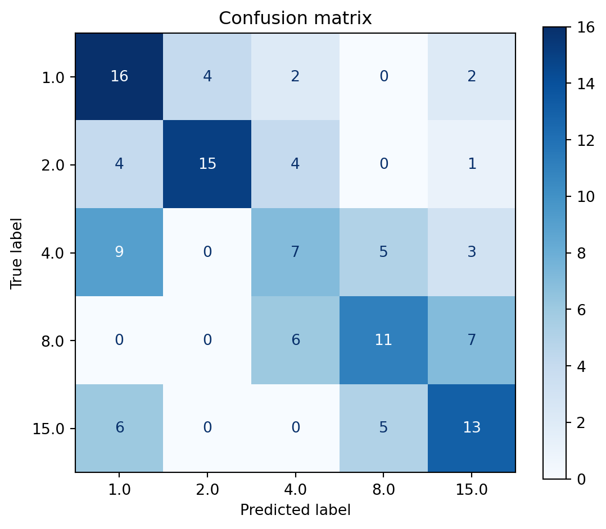
The performance is worse than what we got for orientation, but it is better than chance. Moreover, the structure of the confusion matrix shows a different distribution of errors. Most of the errors are slightly off the diagonal (instead of 180 degrees offset). This indicates that most of the errors are strongest between spatial frequencies that are similar. This is not so bad, because even when it is wrong, the decoder will be close to the correct answer.
Decoding both temporal frequency and orientation
When decoding either orientation or temporal frequency we grouped together stimuli that had the same parameter for one of those dimensions, but varied in the other. For instance, when decoding orientation we pooled together those trials with orientations at 45 degrees, but those differed in their temporal frequency. Thus, the errors in performance could arise from the fact that variability in spiking driven by the non-decoded dimension interfered with the to-be-decoded dimension. One way to account for this is to train our decoder on both orientation and temporal frequency. To do this, each combination of orientation and temporal frequency is given a unique ID and the decoder learns to predict that ID based on spiking. We can then convert back from that ID to the corresponding orientation and temporal frequency.
spks['rf_oritf'] = spks['times'].apply(lambda x:
rf(dg_stims, [0, 2]).compute(x, dims=['orientation', 'temporal_frequency']))
spks['rf_oritf_counts'] = spks['rf_oritf'].apply(lambda x: x.stim_counts)
# create a dataframe with the spike counts for each unit
counts_oritf = spike_counts_dataframe(spks, 'rf_oritf_counts')
# get the unique combinations of the columns 'orientation' and 'temporal_frequency'
stim_ids = counts_oritf[['orientation', 'temporal_frequency']].drop_duplicates().reset_index()
stim_ids['id'] = stim_ids.index
stim_ids.drop(columns='index', inplace=True)
# merge the counts dataframe with the stimulus ids
counts_oritf = counts_oritf.merge(stim_ids, on=['orientation', 'temporal_frequency'])
# prepare data for classification
X = counts_oritf.filter(like='counts').values.astype(int)
y = counts_oritf['id'].values
# split into training and test sets
np.random.seed(42)
train_idx, test_idx = next(skf.split(X, y))
X_train, X_test = X[train_idx], X[test_idx]
y_train, y_test = y[train_idx], y[test_idx]
model = PoissonNB()
model.fit(X_train, y_train)
score_test = model.score(X_test, y_test)
print('Balanced accuracy score: {:.1f}%'.format(score_test*100))
# create a confusion matrix, do not display counts for each cell
y_pred = model.predict(X_test)
conf_mat = confusion_matrix(y_test, y_pred)
cmd = ConfusionMatrixDisplay(confusion_matrix=conf_mat, display_labels=stim_ids['id'])
fig, ax = plt.subplots(figsize=(6,5))
cmd.plot(ax=ax, cmap='Blues')
ax.set_xticks(np.arange(0,len(stim_ids),5))
ax.set_yticks(np.arange(0,len(stim_ids),5))
ax.set_title('Confusion matrix')
# remove the counts for each cell, for display purposes
for text in cmd.text_:
for t in text:
t.set_text('')
fig.tight_layout()Balanced accuracy score: 32.5%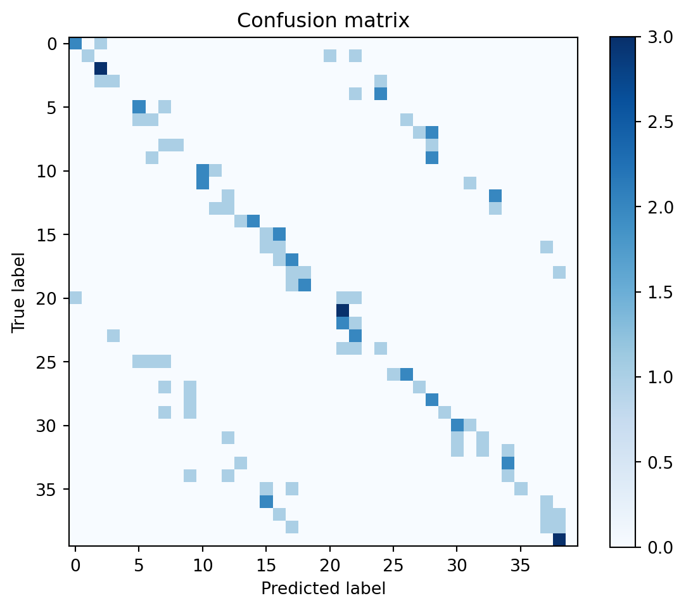
Trying to decode the ID resulted in relatively poor performance. At ~33% we are much worse than our performance purely on orientation or temporal frequency. You can see in the confusion matrix that the symmetry in orientation responsiveness is still cropping up. However, perhaps when we assign the IDs to their corresponding orientations and temporal frequencies the performance will be improved.
# get the predicted orientation and temporal frequency
y_pred_ori = stim_ids['orientation'].loc[y_pred].values
y_test_ori = stim_ids['orientation'].loc[y_test].values
score_ori = balanced_accuracy_score(y_test_ori, y_pred_ori)
y_pred_tf = stim_ids['temporal_frequency'].loc[y_pred].values
y_test_tf = stim_ids['temporal_frequency'].loc[y_test].values
score_tf = balanced_accuracy_score(y_test_tf, y_pred_tf)
# create a confusion matrix for the orientation
conf_mat_ori = confusion_matrix(y_test_ori, y_pred_ori)
cmd_ori = ConfusionMatrixDisplay(confusion_matrix=conf_mat_ori, display_labels=ori_vals)
fig, ax = plt.subplots(1,2,figsize=(10,5))
cmd_ori.plot(ax=ax[0], cmap='Blues')
ax[0].set_title('Confusion matrix for orientation: {:.1f}%'.format(score_ori*100))
ax[0].set_xticklabels(map(int,ori_vals))
ax[0].set_yticklabels(map(int,ori_vals))
# create a confusion matrix for the temporal frequency
conf_mat_tf = confusion_matrix(y_test_tf, y_pred_tf)
cmd_tf = ConfusionMatrixDisplay(confusion_matrix=conf_mat_tf, display_labels=tf_vals)
cmd_tf.plot(ax=ax[1], cmap='Blues')
ax[1].set_title('Confusion matrix for temporal frequency: {:.1f}%'.format(score_tf*100))
ax[1].set_xticklabels(map(int,tf_vals))
ax[1].set_yticklabels(map(int,tf_vals))
fig.get_children()[-1].remove()
fig.get_children()[-1].remove()
fig.tight_layout()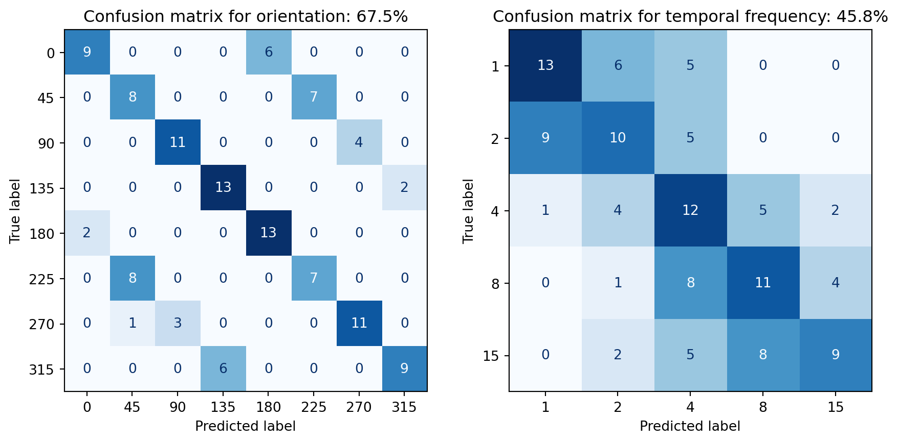
Nope, performance is still worse than training on individual dimensions. One possible contributing factor is by splitting our data into 40 different groups (8 orientations x 5 temporal frequencies) we have noisy estimates of the mean response to each stimulus. This would impair our ability to decode on the test data that was held out during training.
Given how few knobs we have for optimizing the Naive Bayes classifier, it is worth asking if there are any additional ways we can improve our decoder’s performance. One approach is to remove variability that is unrelated to the stimuli. We will refer to this uncontrolled variability as noise.
Gaussian Naive Bayes
If we do this transformation to our data, then we will convert our count data, which were integers from 0 to infinity, to real numbers that can be positive or negative. This does not agree with the Poisson distribution we use to calculate the probability. Instead, we will switch to a Gaussian distribution, which has the form:
p(x) = \frac{1}{\sqrt{2\pi} SD}e^{\frac{-(x-M)^2}{2 SD^2}}
where SD is the standard deviation and M is the mean. This means we have to change our Naive Bayes estimator class to use the Gaussian distribution. We can accomplish this by inheriting from the PoissonNB class and changing the _pdf and fit methods. We will also need to store both the mean and standard deviation in the params attribute.
class GaussNB(PoissonNB):
def _pdf(self, x):
"""
Calculate the Gaussian probability density function.
Parameters
----------
X : array-like, (n_features)
A single input sample. For this model, it is the spike counts.
Each entry corresponds to a neuron.
Returns
-------
pdf : array-like, (n_classes, n_features)
The Gaussian probability densities for each class and neuron.
"""
if self.params is None:
raise ValueError('Model has not been trained yet.')
return norm.pdf(x, loc=self.params[:,:,0], scale=self.params[:,:,1])
def fit(self, X, y):
"""
Fit the model to the data
Parameters
----------
X : array-like, (n_samples, n_features)
The training input samples. For this model, it is the spike counts.
Each row to a sample and each column corresponds to a neuron.
y : array-like, (n_samples)
The target values.
Returns
-------
score : float
The balanced accuracy score of the model on the training data.
"""
# get the unique classes of y
self.vals_y = np.unique(y)
# calculate the prior probability of each class
self.p_y = np.array([np.sum(y==c) / len(y) for c in self.vals_y])
# to fit the gusassian distribution we need to calculate the
# mean and standard deviation for each class and neuron
self.params = np.zeros((len(self.vals_y), X.shape[1], 2))
for i, c in enumerate(self.vals_y):
self.params[i,:,0] = np.mean(X[y==c], axis=0) # mean, stored in first 'sheet'
self.params[i,:,1] = np.std(X[y==c], axis=0) # standard deviation, stored in second 'sheet'
# if the standard deviation is zero, set it to 1
self.params[i,:,1][self.params[i,:,1]==0] = 1
score = self.score(X, y)
return score Now that we have our new class, let’s give it a try on decoding orientation, but this time without controlling for shared variability. This will test how changing the probability distribution affects performance.
X = counts_ori.filter(like='counts').values.astype(int)
y = counts_ori['orientation'].values
# split into training and test sets
np.random.seed(42)
train_idx, test_idx = next(skf.split(X, y))
X_train, X_test = X[train_idx], X[test_idx]
y_train, y_test = y[train_idx], y[test_idx]
model = GaussNB()
score = model.fit(X_train, y_train)
score_test = model.score(X_test, y_test)
print('Balanced accuracy score: {:.1f}%'.format(score_test*100))
# create a confusion matrix
conf_mat = confusion_matrix(y_test, model.predict(X_test))
cmd = ConfusionMatrixDisplay(confusion_matrix=conf_mat, display_labels=ori_vals)
fig, ax = plt.subplots(figsize=(6,5))
cmd.plot(ax=ax, cmap='Blues')
ax.set_title('Confusion matrix')
ax.set_xticklabels(map(int,ori_vals))
ax.set_yticklabels(map(int,ori_vals))
fig.tight_layout()Balanced accuracy score: 70.8%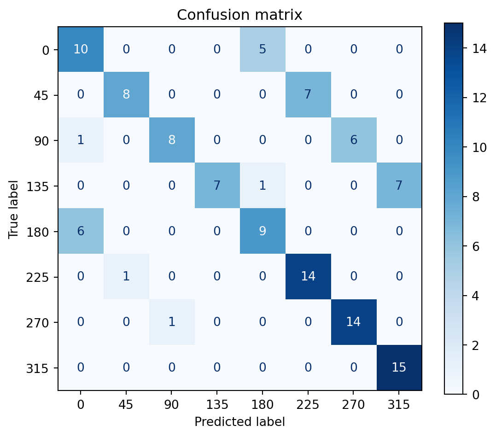
Switching to a Gaussian probability function left our decoder performance virtually unchanged. Note that this was despite doubling the number of parameters (mean and standard deviation, instead of just mean) we used to describe each neuron’s response to a stimulus. Now, let’s try it with the shared variability removed.
def rem_shared(data):
# remove the shared component of the data
# z-transform each unit's response across all stimuli
data_z = zscore(data, axis=1)
# remove the component of the response shared across
# all units for each stimulus
data_out = data_z-np.mean(data_z, axis=0, keepdims=True)
return data_out
y = counts_ori['orientation'].values
# split into training and test sets
np.random.seed(42)
train_idx, test_idx = next(skf.split(X, y))
X_train, X_test = rem_shared(X[train_idx]), rem_shared(X[test_idx])
y_train, y_test = y[train_idx], y[test_idx]
model = GaussNB()
score = model.fit(X_train, y_train)
score_test = model.score(X_test, y_test)
print('Balanced accuracy score: {:.1f}%'.format(score_test*100))
# create a confusion matrix
conf_mat = confusion_matrix(y_test, model.predict(X_test))
cmd = ConfusionMatrixDisplay(confusion_matrix=conf_mat, display_labels=ori_vals)
fig, ax = plt.subplots(figsize=(6,5))
cmd.plot(ax=ax, cmap='Blues')
ax.set_title('Confusion matrix')
ax.set_xticklabels(map(int,ori_vals))
ax.set_yticklabels(map(int,ori_vals))
fig.tight_layout()Balanced accuracy score: 78.3%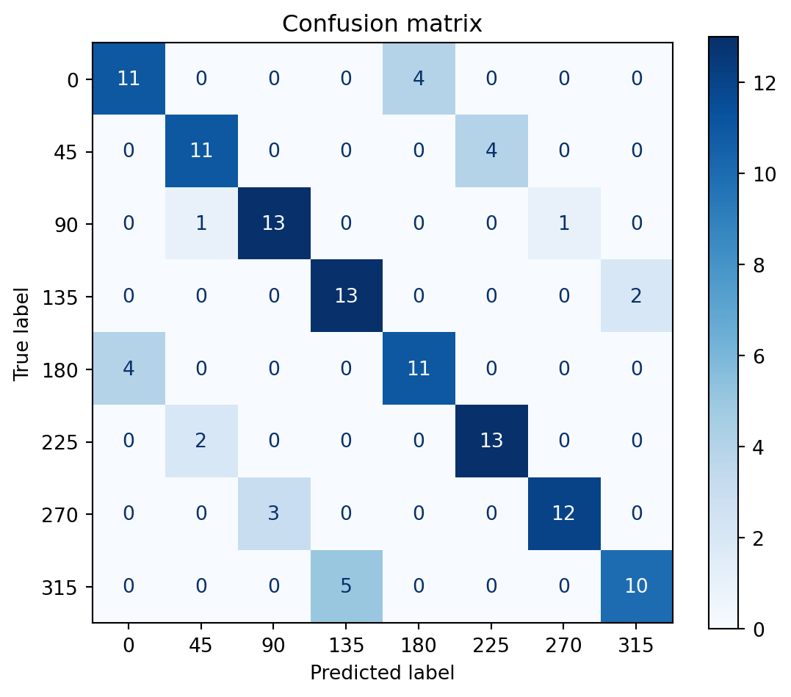
Well that boosted performance. We went from ~71% to ~78%, a real improvement! Thus, removing shared variability that was stimulus independent increased our decoder’s effectiveness.
Impact of number of neurons on decoder performance
At this point you might be wondering if the performance could reach 100% if we increased the number of neurons we recorded. Perhaps this would happen if we had enough units with even a slight asymmetry in their response to orientations that were 180 degrees apart. We can explore this question by seeing how our decoder performs as we vary the number of units. To do this, we will train the decoder on n_units randomly selected units, and repeat this 10 times to sample a different subset of the population and get a more reliable estimate of performance. As we increase the number of units sampled, we should observe a systematic improvement in the decoder performance. Few units should yield poor performance, and using all the units should yield the performance we saw above. The curve traced out by intermediate numbers of units will tell us what to predict as we add more units beyond what we have in the current data set.
# iterate over different numbers of units, train the model and calculate the score on test data 10 times
# store the scores in a numpy array
num_units = X.shape[1]
scores = np.zeros((num_units,10))
for n_units in range(num_units):
for rep in range(10):
# randomly select n_units
unit_idx = np.random.choice(num_units, n_units, replace=False)
model = GaussNB()
model.fit(X_train[:,unit_idx], y_train)
scores[n_units, rep] += model.score(X_test[:,unit_idx], y_test)
# plot the scores
fig, ax = plt.subplots(figsize=(6,4))
ax.plot(np.arange(1, num_units+1), np.mean(scores, axis=1)*100)
ax.set_xlabel('Number of units')
ax.set_ylabel('Balanced accuracy score')
ax.set_title('Number of units vs. balanced accuracy score')
fig.tight_layout()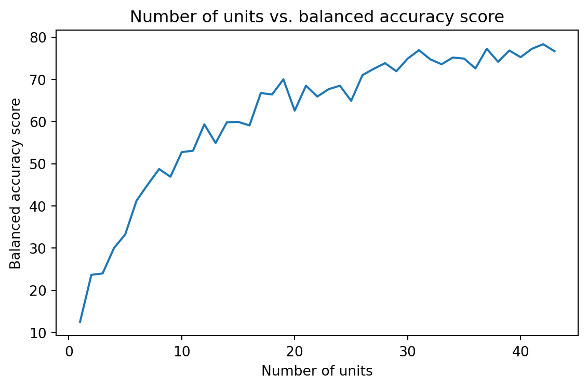
As we increase the number of units used for decoding, we can see the performance asymptote just below 80%. Performance rapidly increased from chance to ~50% at 10 units, then got slower and slower for each additional 10 units that were added. This indicates that adding more units, even doubling them, would not substantially improve performance. This may reflect a fundamental limitation of the symmetry in how orientations are represented in primary visual cortex.
We can test this hypothesis by examining how performance varies with number of units for coding of temporal frequency, which does not exhibit any such symmetry.
# determine how the number of untis affects the test score for decoding temporal frequency
X = counts_tf.filter(like='counts').values.astype(int)
y = counts_tf['temporal_frequency'].values
# split into training and test sets
np.random.seed(42)
train_idx, test_idx = next(skf.split(X, y))
X_train, X_test = rem_shared(X[train_idx]), rem_shared(X[test_idx])
y_train, y_test = y[train_idx], y[test_idx]
num_units = X.shape[1]
# iterate over different numbers of units, train the model and calculate the score on test data 10 times
scores = np.zeros((num_units,10))
for n_units in range(1,num_units+1):
for rep in range(10):
# randomly select n_units
unit_idx = np.random.choice(num_units, n_units, replace=False)
model = GaussNB()
model.fit(X_train[:,unit_idx], y_train)
scores[n_units-1, rep] += model.score(X_test[:,unit_idx], y_test)
fig, ax = plt.subplots(1,2,figsize=(10,4))
# plot confusion matrix
conf_mat = confusion_matrix(y_test, model.predict(X_test[:,unit_idx]))
score_test = model.score(X_test[:,unit_idx], y_test)
cmd = ConfusionMatrixDisplay(confusion_matrix=conf_mat, display_labels=tf_vals)
cmd.plot(ax=ax[0], cmap='Blues')
ax[0].set_title('Confusion matrix: score = {:.1f}%'.format(score_test*100))
ax[0].set_xticklabels(map(int,tf_vals))
ax[0].set_yticklabels(map(int,tf_vals))
ax[1].plot(np.arange(1, num_units+1), np.mean(scores, axis=1)*100)
ax[1].set_xlabel('Number of units')
ax[1].set_ylabel('Balanced accuracy score')
ax[1].set_title('Number of units vs. balanced accuracy score')
fig.tight_layout()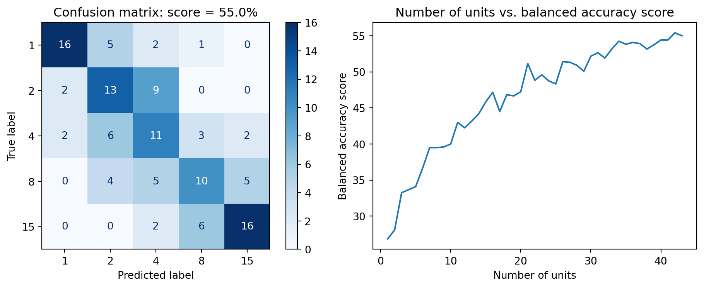
While performance is overall worse for temporal frequency, it is still increasing even with the maximum number of units. Thus, adding additional units should further improve our ability to decode.